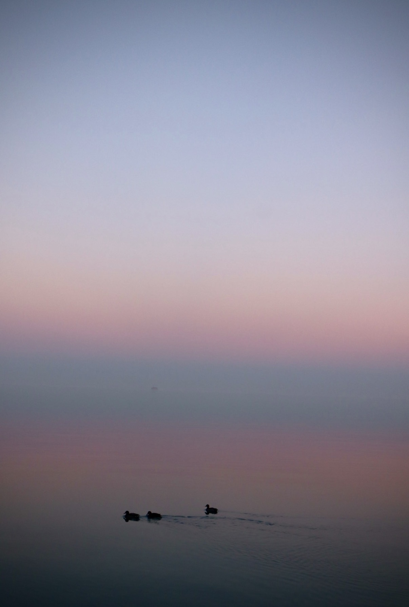
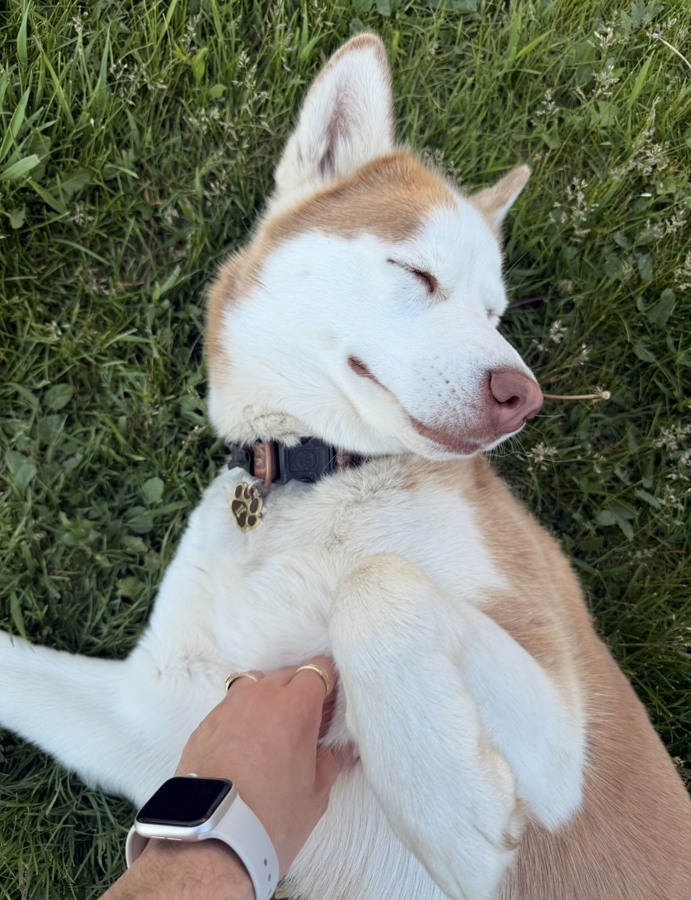
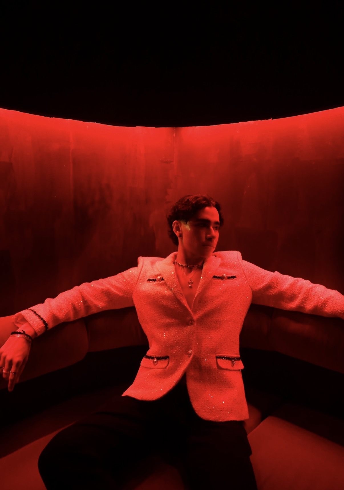

WELCOME TO MY WEBSITE
A little place on the internet where I can share some things about myself, the people I love, and a few moments I've captured along the way.
Get to know me ↓Hi, my name is Sebastian Torres. I was born and raised in Medellín, Colombia, and I moved to Chicago a few years ago to start college and begin a new chapter of my life.
Moving to a new country and starting college was definitely a big change, but I've really enjoyed getting to experience a different city and meet new people. I'm currently in college studying finance.
Outside of school, I'm someone who loves doing a lot of different things. I love watching movies, going to new places, learning new things, and honestly just finding something fun to do. I also really love sunsets. I don't know what it is about them, but I can never get tired of taking pictures of them.
Photography is something I really enjoy. I'm definitely not a professional photographer, but I like taking pictures of things that catch my attention or moments that I want to remember later.
One of the biggest parts of my life is my dog, Kitana. She's a Siberian Husky and just turned three. She is probably one of the funniest and most important parts of my life, and yes, I will probably show everyone pictures of her whether they ask or not.
I also love dressing up. Whether it's going out with friends, going to an event, or just putting together an outfit that I really like, fashion is one of the ways I like expressing myself.
I guess if I had to describe myself in a few words, I'd say I'm curious, outgoing, and always looking for something new to experience.
Medellín, Colombia
Chicago, Illinois
Movies, sunsets & exploring
Kitana
Here are a few pictures that mean something to me. Some are just moments I thought looked cool, and others are things I genuinely love.

I took this picture because I loved how calm everything looked. The reflection of the sunset over the water, and the three little ducks, looks super whimsical

This is Kitana, my Siberian Husky. She just turned three. She can be crazy sometimes, but I wouldn't changed anything about her.

I really enjoy putting together outfits and dressing up for different occasions. Sometimes you just have to go all out.
THANK YOU FOR VISITING
I hope you enjoyed getting to know a little bit about me and seeing some of the things that are important to me. Thanks for taking the time to visit my website!
Back to top ↑